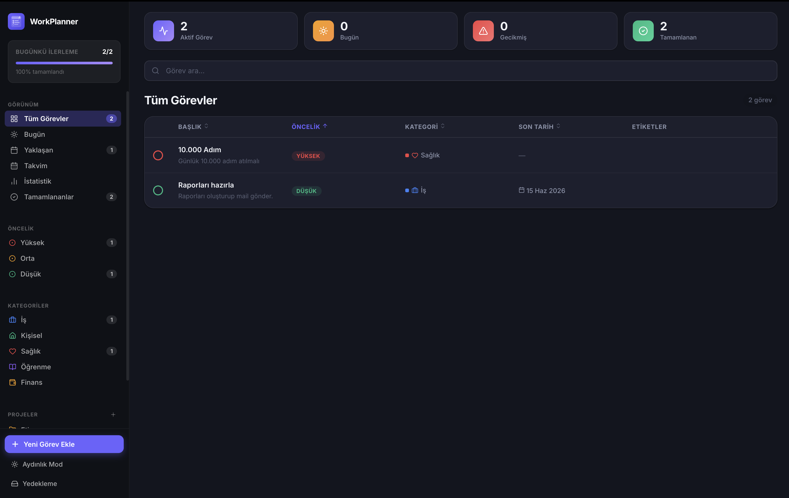
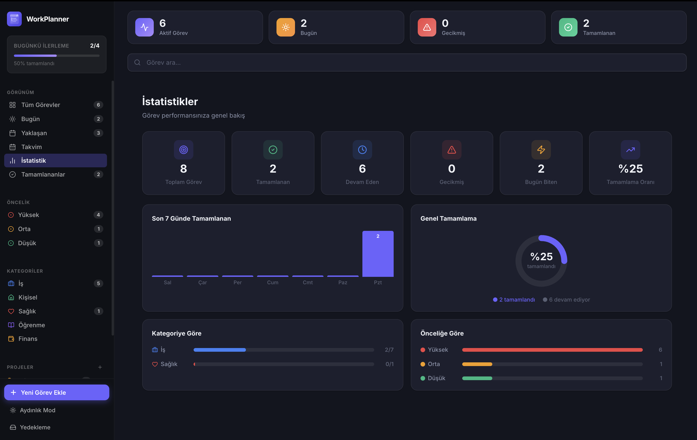
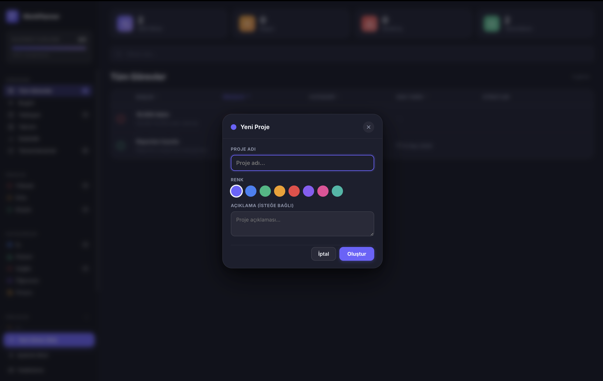
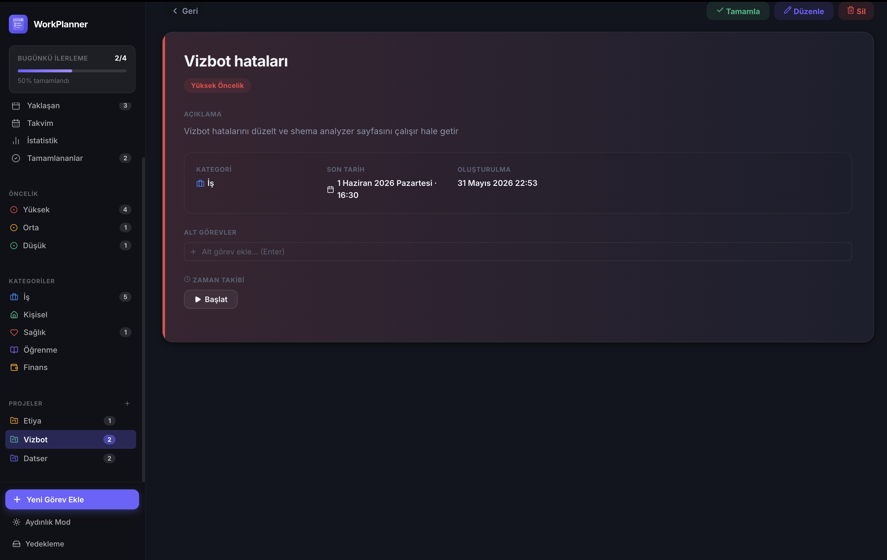
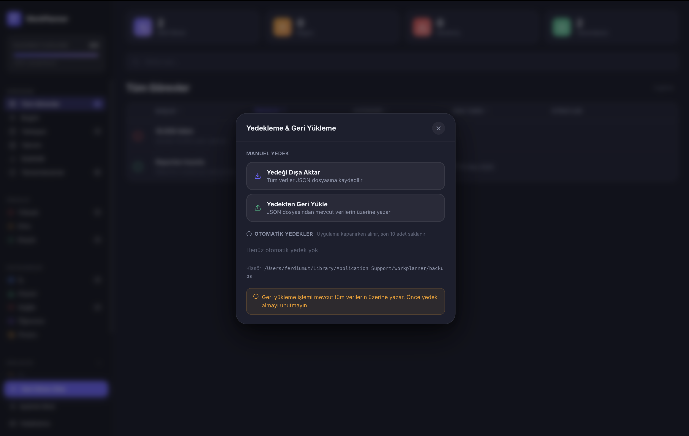
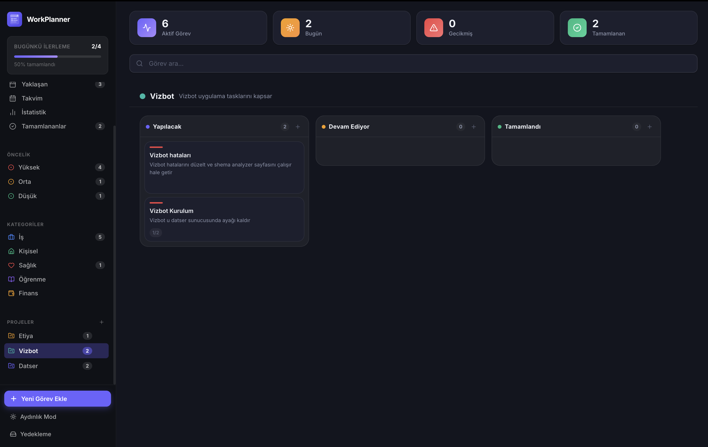

Kanban tahtası, zaman takibi, proje yönetimi ve güçlü istatistikler — tüm veriler cihazında, tamamen gizli.

Neden WorkPlanner
Üretkenliğini verilerle takip et, hedeflerine ulaş.
Özellikler
Küçük notlardan büyük projelere kadar her şeyi tek bir yerde yönet.
Tüm görevlerini öncelik, kategori ve son tarihle organize et. Bugün, yaklaşan ve tamamlananlar için ayrı görünümler.
Tamamlama oranı, kategori dağılımı, haftalık trend — üretkenliğini verilerle ölç.

Görevleri renkli projelere göre organize et. Projeye özel filtrele, kolayca geç.

Her görev için süre tut. Haftalık ve aylık raporlarla zamanını nasıl harcadığını gör.

Tüm veriler cihazında saklanır. İnternet bağlantısı yok, bulut hesabı yok, gizlilik sorunu yok.
Son tarihe yaklaşan görevler için otomatik macOS bildirimi. ⌘⇧Space ile herhangi bir uygulamadan görev ekle.
Verilerini JSON olarak dışa aktar, farklı cihazlara taşı. Uygulama kapanırken otomatik yedek oluşturur.

İstatistikler
Haftalık trend grafikleri, kategori dağılımı ve tamamlama oranları — ne kadar verimli olduğunu bir bakışta gör.
Kanban Tahtası
Görevleri sürükle-bırak ile kolonlar arasında taşı. Her proje için ayrı Kanban tahtası, tamamlananlar otomatik arşivlenir.

Nasıl Çalışır
Kurulum süreci yok, hesap açmaya gerek yok.
App Store'dan WorkPlanner'ı indir. Tek tık kurulum, saniyeler içinde hazır.
⌘N kısayoluyla herhangi bir uygulamadan hızlıca görev ekle. Kategori, öncelik ve tarih belirle.
Kanban tahtasında projelerini yönet, istatistiklerle üretkenliğini izle.
Mac App Store'da mevcut. Bir kez satın al, sonsuza kadar kullan.